Professions in Battle For Azeroth will be significantly different than how they worked in Legion. This page provides an overview of the new items and the professions changes in Battle for Azeroth. I will update this page everytime I find something interesting in the new beta builds.
Profession skill squish
Professions skills are split between expansions now, you'll have a separate skill bar for each expansion. There are still 950 profession levels in total, just that there is no one single progress bar with 1 to 950 for it anymore. Instead, there are 8 separate progress bars. (The only exception is Archaeology, because it will still have a 1-950 progress bar)
You can take Zandalari Blacksmithing (BfA) for example, and max it out without first having to put any points into the previous 800 levels of the Blacksmithing skills. In fact, you don't even have to take any of the other Blacksmithing subsections at all.
Note: You have to use recipes from the expansion you are trying to max out to level a skill bar. So for example if you want to level Northrend Blacksmithing, you will only gain skill points if you use Northrend recipes. You have to level each one separately if you want to max out all of them.
In Battle For Azeroth this is what a typical Blacksmithing profession will look like:
- 1 to 300 - Classic Blacksmithing
- 1 to 75 - Outland Blacksmithing
- 1 to 75 - Northrend Blacksmithing
- 1 to 75 - Cataclysm Blacksmithing
- 1 to 75 - Pandaren Blacksmithing
- 1 to 100 - Draenor Blacksmithing
- 1 to 100 - Legion Blacksmithing
- 1 to 175 - Kul Tiran / Zandalari Blacksmithing
Kul Tiran and Zandalari are the names of new Battle for Azeroth profession tiers. They are named differently for Horde and Alliance, but the name is the only difference between them.
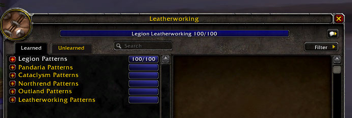
New Crafting Materials
There are 3 new soulbound crafting materials:  [Expulsom],
[Expulsom],  [Hydrocore],
[Hydrocore],  [Sanguicell]
[Sanguicell]
 [Expulsom] is obtained primarily from scrapping armors and weapons using the Scrap-o-Matic 1000 (Alliance), or the Shred-Master Mk1 (Horde). These tools work like disenchanting, you can break down any gear obtained that is from the Battle for Azeroth expansion, including dungeon/raid drops, quest rewards, world drops and crafted gear. The Scrapper isn't restricted to specific trade skills. Anyone, even people without a crafting skill can use it. You will mostly get ores, gems, leathers, cloths, and occasionaly you will get one [Expulsom].
[Expulsom] is obtained primarily from scrapping armors and weapons using the Scrap-o-Matic 1000 (Alliance), or the Shred-Master Mk1 (Horde). These tools work like disenchanting, you can break down any gear obtained that is from the Battle for Azeroth expansion, including dungeon/raid drops, quest rewards, world drops and crafted gear. The Scrapper isn't restricted to specific trade skills. Anyone, even people without a crafting skill can use it. You will mostly get ores, gems, leathers, cloths, and occasionaly you will get one [Expulsom].
 [Hydrocore] is looted from the last boss in Mythic Dungeons, and from the chest at the end of Mythic+ dungeons.
[Hydrocore] is looted from the last boss in Mythic Dungeons, and from the chest at the end of Mythic+ dungeons.
 [Sanguicell] drops from raid bosses in Uldir. Currently 1 drops from each LFR wing, 1 drops from a normal boss and 10 from a heroic boss.
[Sanguicell] drops from raid bosses in Uldir. Currently 1 drops from each LFR wing, 1 drops from a normal boss and 10 from a heroic boss.
Crafted Epic Gear
The new highest ilvl crafted armors are all soulbound. You can't buy them or sell them.
There is a new discovery system for crafting these armors. First you have to craft the base ilvl 355 armor (normal raid ilvl) which requires 110-120 profession skill (depends on which profession). After you craft this armor, you will discover a new recipe, which is ilvl 370 (heroic raid ilvl), and after you craft one from the ilvl 370 armor, you will discover a new recipe for an ilvl 385 armor (mythic raid ilvl).
Leatherworking example:
- ilvl 355 -
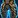
[Mistscale Leggings] - ilvl 370 - [Imbued Mistscale Leggings]
- ilvl 385 -
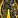
[Emblazoned Mistscale Leggings]
The ilvl 355 armors will be fairly easy to craft, but you will need to raid a lot to get enough  [Sanguicell] for the ilvl 370 version, and the ilvl 385 version requires 250 x
[Sanguicell] for the ilvl 370 version, and the ilvl 385 version requires 250 x  [Sanguicell]
[Sanguicell]
Craftable ilvl 355 armor slots:
- Leatherworking: Boots, Legs (Mail and Leather)
- Blacksmithing: Boots, Legs (Plate)
- Tailoring: Boots, Legs (Cloth)
Recipe ranks and Profession quests
Most recipes still have ranks just like in Legion, but they are a lot easier to get because none of them require Exalted reputation, only Revered or Honored.
There are no profession quests for crafting profession in BfA, you will learn most recipes from your trainer.
Gathering profession ranks are still obtained from quests, but they are really easy to get since most of the quests are just given you by the trainer, and the quest items that drops from herbs/leathers/ores have a lot higher drop chance than the rank 3 quests in Legion.
Alchemy
- Alchemist only trinkets: [Surging Alchemist Stone], [Siren's Alchemist Stone]
- Follower equipment: [Potion of Herb Tracking]
- Trinkets:
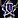
[Endless Tincture of Renewed Combat],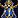
[Endless Tincture of Fractional Power]
Combat potions:
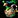
[Battle Potion of Agility],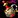
[Battle Potion of Stamina],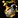
[Battle Potion of Strength],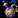
[Battle Potion of Intellect]
Flasks:
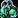
[Flask of the Currents], [Flask of Endless Fathoms], [Flask of the Undertow], [Flask of the Vast Horizon],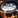
[Mystical Cauldron]
Utility potions:
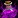
[Ancient Rejuvenation Potion], [Coastal Mana Potion], [Coastal Healing Potion], [Demitri's Draught of Deception],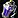
[Lightfoot Potion],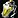
[Potion of Concealment], [Potion of Bursting Blood],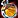
[Potion of Replenishment],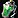
[Sea Mist Potion]
Transmutes:
- [Transmute: Expulsom],
 [Transmute: Cloth to Skins],
[Transmute: Cloth to Skins],  [Transmute: Herbs to Cloth], [Transmute: Herbs to Ore], [Transmute: Meat to Pet],
[Transmute: Herbs to Cloth], [Transmute: Herbs to Ore], [Transmute: Meat to Pet], 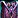
[Transmute: Fish to Gems], [Transmute: Ore to Gems],[Transmute: Ore to Cloth], 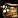
[Transmute: Ore to Herbs] - They all share 1 day cooldown, so you can only craft one of these once a day.
Archaeology
[Drust Archaeology Fragment] and 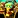
Drust rare solves:
Zandalari rare solves:
Blacksmithing
- Follower equipment:
 [Storm Silver Spurs],
[Storm Silver Spurs], 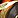
[Platinum Whetstone],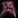
[Magnetic Mining Pick] - Utility: [Monel-Hardened Hoofplates], [Monel-Hardened Stirrups],
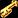
[Monelite Skeleton Key] - ilvl 300 rare armors and weapons (for level 120): Full list of Stormsteel and Honorable Combatant set.
- ilvl 225 uncommon armors and weapons (for level 111): Full list of Monel-Hardened set.
Cooking
No Nomi this time. You can get most rank 3 recipes from World Quests, and you can buy the rest when you reach Revered with the Tortollan Seekers.
Meats:
New foods:
- Critical Strike - [Kul Tiramisu], [Honey-Glazed Haunches]
- Haste -
 [Ravenberry Tarts], [Swamp Fish 'n Chips]
[Ravenberry Tarts], [Swamp Fish 'n Chips] - Mastery - [Loa Loaf],
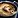
[Sailor's Pie] - Versatility - [Mon'Dazi],
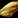
[Spiced Snapper] - Feasts -
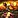
[Galley Banquet], [Bountiful Captain's Feast]
Enchanting
The three new reagents are: [Gloom Dust], [Umbra Shard] and [Veiled Crystal].
- 3 new Enchanter-only bracer enchants:
[Cooled Hearthing],
- [Enchanted Tiki Mask] is supposed to be a new battle pet obtained by enchanting, but I haven't found the recipe yet.
- There are no neck or back enchants, but there are Ring Enchants to cover all secondary stats.
- 4 new gloves enchants for faster crafting/gathering:
- Follower equipement:
 [Disenchanting Rod]
[Disenchanting Rod] - One ilvl 225 wand and two ilvl 300 wands: [Enchanter's Umbral Wand],
 [Honorable Combatant's Sorcerous Scepter], [Enchanter's Sorcerous Scepter]
[Honorable Combatant's Sorcerous Scepter], [Enchanter's Sorcerous Scepter]
Weapon enchants:
 [Enchant Weapon - Gale-Force Striking]
[Enchant Weapon - Gale-Force Striking]- [Enchant Weapon - Coastal Surge]
- [Enchant Weapon - Siphoning]
- [Enchant Weapon - Torrent of Elements]
There are 5 weapon enchants which grant you 50 of a secondary stat for 30 seconds, stacking up to 5 times. Upon reaching 5 stacks, all stacks are consumed to grant you 400 from that stat for 10 sec. (you get a bit more from Armor)
- [Enchant Weapon - Deadly Navigation]
- [Enchant Weapon - Masterful Navigation]
- [Enchant Weapon - Versatile Navigation]
- [Enchant Weapon - Quick Navigation]
- [Enchant Weapon - Stalwart Navigation]
Engineering
There are new ilvl 340 Engineer-only googles like  [AZ3-R1-T3 Synthetic Specs] for every armor type. A nice little bonus is that these helms also increases your Engineering skill by 20.
[AZ3-R1-T3 Synthetic Specs] for every armor type. A nice little bonus is that these helms also increases your Engineering skill by 20.
- Two follower equipement:
 [Makeshift Azerite Detector],
[Makeshift Azerite Detector],  [Monelite Fish Finder]
[Monelite Fish Finder] - ilvl 300 ranged weapons:
 [Honorable Combatant's Stormsteel Destroyer],
[Honorable Combatant's Stormsteel Destroyer],  [Finely-Tuned Stormsteel Destroyer]
[Finely-Tuned Stormsteel Destroyer] - one ilvl 225 and two ilvl 300 maces:
 [Magnetic Discombobulator], [Honorable Combatant's Discombobulator], [Precision Attitude Adjuster]
[Magnetic Discombobulator], [Honorable Combatant's Discombobulator], [Precision Attitude Adjuster]  [Mecha-Mogul Mk2] - craftable mount
[Mecha-Mogul Mk2] - craftable mount
Devices:
 [Deployable Attire Rearranger] - portable transmog device.
[Deployable Attire Rearranger] - portable transmog device. [Interdimensional Companion Repository] - portable stable for hunters.
[Interdimensional Companion Repository] - portable stable for hunters. [Electroshock Mount Motivator] - Increases mounted movement speed by 10% for 10 sec. Stacks up to 5 times. Increased motivation may cause your mount to become disoriented.
[Electroshock Mount Motivator] - Increases mounted movement speed by 10% for 10 sec. Stacks up to 5 times. Increased motivation may cause your mount to become disoriented. [Magical Intrusion Dampener] - Makes you immune to Leap of Faith, threat redirecting abilities, and some gadgets like the Swapblaster. Persists through death. Lasts 12 hrs.
[Magical Intrusion Dampener] - Makes you immune to Leap of Faith, threat redirecting abilities, and some gadgets like the Swapblaster. Persists through death. Lasts 12 hrs. [XA-1000 Surface Skimmer] - Deploy a boat which will immediately being moving across the water for 25 sec. Does not work on land. (30 Sec Cooldown)
[XA-1000 Surface Skimmer] - Deploy a boat which will immediately being moving across the water for 25 sec. Does not work on land. (30 Sec Cooldown)
Belt attachments:
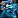
[Belt Enchant: Holographic Horror Projector]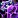
[Belt Enchant: Miniaturized Plasma Shield]- [Belt Enchant: Personal Space Amplifier]
Ranged weapon enchants:
Bombs:
 [Organic Discombobulation Grenade] - Polymorph
[Organic Discombobulation Grenade] - Polymorph [F.R.I.E.D.] - AoE fire dmg
[F.R.I.E.D.] - AoE fire dmg [Thermo-Accelerated Plague Spreader] - AoE poison dmg
[Thermo-Accelerated Plague Spreader] - AoE poison dmg
Fishing
- New fishes:
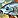
[Redtail Loach], [Sand Shifter],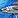
[Slimy Mackerel], [Lane Snapper], [Frenzied Fangtooth],
[Lane Snapper], [Frenzied Fangtooth], 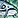
[Great Sea Catfish],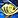
[Tiragarde Perch] - Rare fish:
 [Midnight Salmon]
[Midnight Salmon] 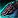
[Great Sea Ray] is a new fishing mount.
Herbalism
New herbs: [Anchor Weed], 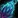 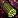 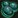
Inscription
New Inks:  [Ultramarine Ink],
[Ultramarine Ink],  [Crimson Ink],
[Crimson Ink],  [Viridescent Ink]
[Viridescent Ink]
Scribers can craft new type of items called contracts. They allows you to gain reputation with a faction every time you complete a world quest on Kul Tiras and Zandalar. One example is  [Contract: Tortollan Seekers], but there are contracts for every faction. These are not soulbound, so you can sell them at the Auction House.
[Contract: Tortollan Seekers], but there are contracts for every faction. These are not soulbound, so you can sell them at the Auction House.
 [Darkmoon Card of War] is used for crafting the new Darkmoon trinkets:
[Darkmoon Card of War] is used for crafting the new Darkmoon trinkets:  [Darkmoon Deck: Blockades],
[Darkmoon Deck: Blockades],  [Darkmoon Deck: Tides],
[Darkmoon Deck: Tides],  [Darkmoon Deck: Squalls],
[Darkmoon Deck: Squalls],  [Darkmoon Deck: Fathoms]
[Darkmoon Deck: Fathoms]
- Follower equipment:
 [Crimson Ink Well]
[Crimson Ink Well]  [Vantus Rune: Uldir] - Vantus Rune for the new raid.
[Vantus Rune: Uldir] - Vantus Rune for the new raid.- New druid Glyphs:
 [Glyph of the Dolphin], [Glyph of the Humble Flyer], [Glyph of the Tideskipper]
[Glyph of the Dolphin], [Glyph of the Humble Flyer], [Glyph of the Tideskipper] - Buff Scrolls:
 [War-Scroll of Battle Shout],
[War-Scroll of Battle Shout],  [War-Scroll of Fortitude],
[War-Scroll of Fortitude],  [War-Scroll of Intellect]
[War-Scroll of Intellect]  [Tome of the Quiet Mind] and
[Tome of the Quiet Mind] and  [Codex of the Quiet Mind] are the new tomes for adjusting talents.
[Codex of the Quiet Mind] are the new tomes for adjusting talents. [Scroll of Unlocking] - Allows opening of locks that require up to 600 lockpicking skill.
[Scroll of Unlocking] - Allows opening of locks that require up to 600 lockpicking skill.- ilvl 300 off-hands:
 [Inscribed Vessel of Mysticism],
[Inscribed Vessel of Mysticism],  [Honorable Combatant's Etched Vessel]
[Honorable Combatant's Etched Vessel]
Jewelcrafting
Follower equipment: [Kaleidoscopic Lens]
New raw gems: 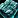 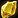 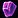 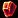 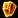
- Uncommon stat gems are +30 crit, mastery, haste or versatility.
- Rare stat gems are +40 crit, mastery, haste or versatility.
- Epic gems are +40 Intellect, Agility or Strength.
Utility gems:
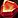
[Insightful Rubellite] gives you +5% Experience.- [Straddling Viridium] gives +3% Movement Speed.
Crafted armors/weapons
- ilvl 300 Rings: [Royal Quartz Loop], [Tidal Amethyst Loop], [Owlseye Loop], [Amberblaze Loop]
- ilvl 225 Rings: [Kyanite Ring], [Kubiline Ring], [Golden Beryl Ring], [Solstone Ring]
- ilvl 300 weapons: [Laribole Staff of Alacrity], [Scarlet Diamond Staff of Intuition], [Honorable Combatant's Staff of Intuition]
- ilvl 225 weapons: [Viridium Staff of Alacrity], [Rubellite Staff of Intuition]
Leatherworking
- Follower equipement:
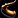
[Amber Rallying Horn], [Tempest Hide Pouch] - ilvl 300 rare armors and weapons (for level 120): Full list of armors and weapons.
- ilvl 225 uncommon armors and weapons (for level 111): Full list of Coarse Leather, Shimmerscale set.
Utility
- [Coarse Leather Barding] - Prevents the player from being dazed.
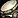
[Drums of the Maelstrom] - Increases Haste by 25% for all party and raid members. Lasts 40 sec.- [Shimmerscale Diving Suit] - Scuba suit, increase your swim speed by 100%. Lasts 15 min.
- [Shimmerscale Diving Helmet] Scuba helm allows you to breathe underwater.
Mining
New ores:  [Platinum Ore],
[Platinum Ore],  [Monelite Ore],
[Monelite Ore],  [Storm Silver Ore]
[Storm Silver Ore]
Skinning
- Leather:
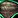
[Tempest Hide], [Coarse Leather] - Scales:
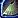
[Mistscale],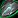
[Shimmerscale] - Bones:
 [Calcified Bone],
[Calcified Bone], 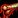
[Blood-Stained Bone]
Tailoring
- New cloths: [Deep Sea Satin], [Tidespray Linen]
- New bags: [Deep Sea Bag], [Embroidered Deep Sea Bag]
- Follower equipment: [Rough-hooked Tidespray Linen]
- Nets:
 [Hooked Deep Sea Net], [Tidespray Linen Net]
[Hooked Deep Sea Net], [Tidespray Linen Net] - Battle Flags: [Battle Flag: Rallying Swiftness], [Battle Flag: Spirit of Freedom], [Battle Flag: Phalanx Defense]
- Tailoring-only cloak enchants:
 [Discreet Spellthread], [Feathery Spellthread], [Resilient Spellthread]
[Discreet Spellthread], [Feathery Spellthread], [Resilient Spellthread] - ilvl 300 rare armors (for level 120): Full list of armors.
- ilvl 225 uncommon armors (for level 111): Full list of Tidespray armor set.